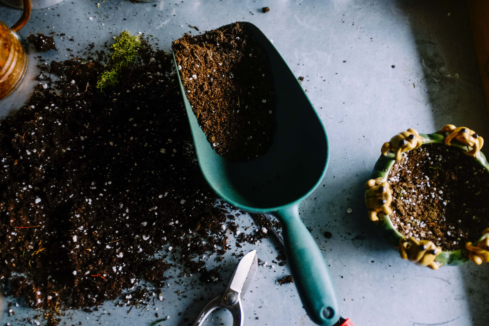

O nas
Siedziba prowadzonego przez Andrzeja Obrzuda centrum ogrodniczego Lawenda mieści się w Szczecinie. Początek naszej działalności sięga 1993 roku.
Swoim klientom oferujemy duży wybór niepowtarzalnych i wyjątkowych akcesoriów ogrodowych oraz bogatą ofertę ozdób różnego rodzaju.
Tajemnicą naszego sukcesu jest zatrudniana kadra pracownicza. Są to ludzie, dla których ogród jest nie tylko pracą, ale i hobby, a może nawet pasją.
Ogród to wyjątkowa część każdego domu. Jest coś wyjątkowego w możliwości zrelaksowania się w otoczeniu zieleni, kolorowych
i pachnących kwiatów i w cieniu drzew. Zdarza się jednak, że ze względu na brak czasu, pomysłu lub odpowiednich
umiejętności nie jesteśmy w stanie bez pomocy profesjonalisty urządzić swojego „małego raju na ziemi”.
Wtedy niestety potencjał miejsca marnuje się. Nie chcemy dopuścić do tego typu sytuacji. Z naszej strony
dołożymy wszelkich starań, by pomóc naszym klientom w zagospodarowaniu terenów zielonych.
Oferta naszej firmy składa się między innymi z:
kwiatów, bylin i krzewów
ziemi i podłoża w małych i dużych opakowaniach
drzewek ozdobnych i owocowych
nasion traw, kwiatów, warzyw i kiełków
narzędzi ogrodniczych
automatycznych systemów nawadniania
ozdób
Specjalizujemy się w sprzedaży wysokiej jakości artykułów do ogrodu oraz sprzętu, między innymi mebli. Proponujemy także
zakup cebulek roślin oraz gotowych roślin doniczkowych i krzewów ozdobnych. Zatrudniamy personel składający
się z pracowników z wieloletnim doświadczeniem w branży, którzy dodatkowo podejmą się opieki nad grobami.
Sprawią, że miejsce pochówku będzie odzwierciedleniem szacunku dla zmarłej osoby. Zajmujemy się także projektowaniem
i zakładaniem ogrodów. Dodatkowo świadczymy usługi brukarskie, w celu stworzenia dekoracyjnych elementów
na terenach zielonych.


